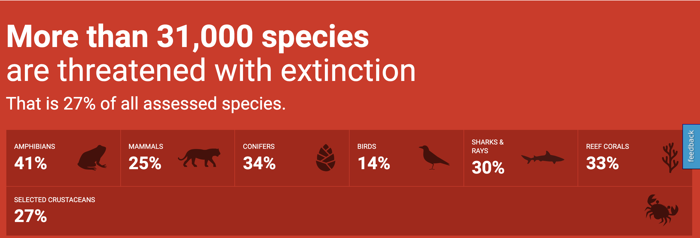

Narrative
This Project will talk about visualization on endangered animal from International Union for Conservation of Nature (IUCN). Basically, there are many species which are threatened and IUCN has list of these species which put in separate categories. My Goal is to show how many species are in red list in different categories across the world. Would like to show if there is increase or decrease in count of Endangered species in Different Taxonomy across the world over the period of time from 1998 to 2020. Can also showcase which are Different family / class of species that are endangered globally. So that awareness is spread about Endangered Species, out of which how many species are Mammals, Amphibians, Plants and etc and steps are taken to conserve them.
The IUCN Red List Categories and Criteria are intended to be an easily and widely
understood system for classifying species at high risk of global extinction.
It divides species into nine categories:
Not Evaluated, Data Deficient (DD),
Least Concern (LC), Near Threatened (NT), Vulnerable (VU),
Endangered (EN), Critically Endangered (CR), Extinct in the Wild (EW) and Extinct (EX).

Acknowledgements
Thanks to Riddhi Madeka for their suggestion to do the visualization on Threatened species.
Thanks to Sophie Engle for suggestion on Final Visualizations
New york Income
Multiple Maps
Multiple Map
Thanks to Edmund and Betty for helping me with d3 Legend